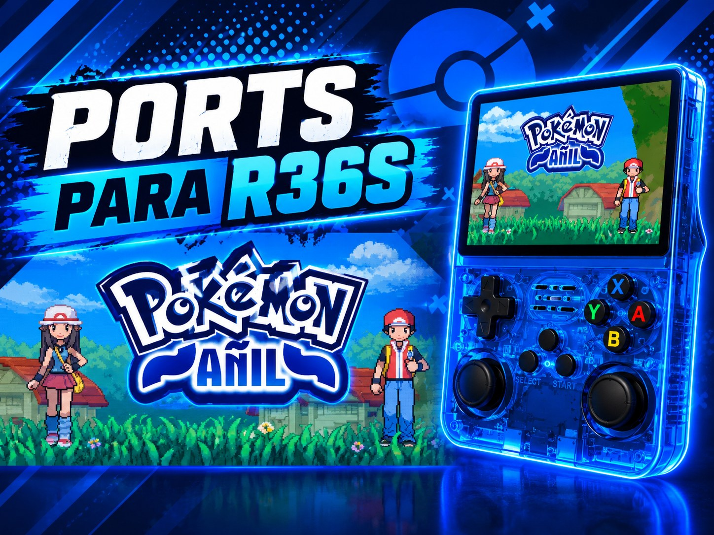

CONSOLA · R36S
Ports para R36S
Aquí encontrarás mis ports hechos para la consola R36S. Asegúrate de tener una consola original o clon, con sistemas como ArkOS, DarkOS, DarkOS RE, etc.

CONSOLA · R36S
Aquí encontrarás mis ports hechos para la consola R36S. Asegúrate de tener una consola original o clon, con sistemas como ArkOS, DarkOS, DarkOS RE, etc.
